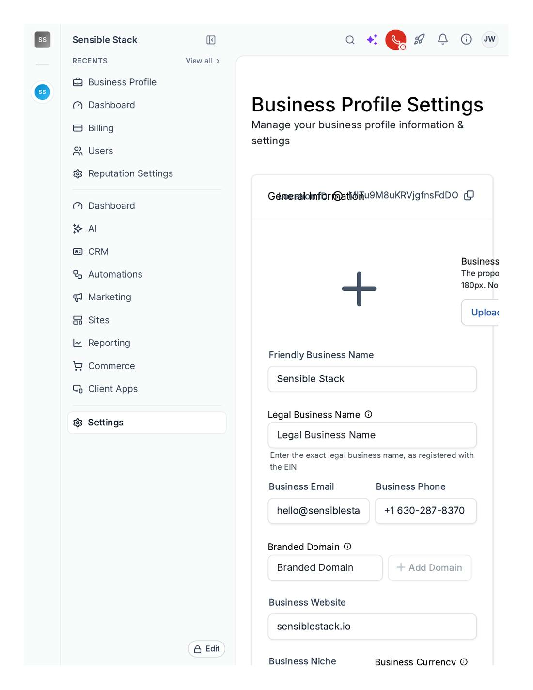
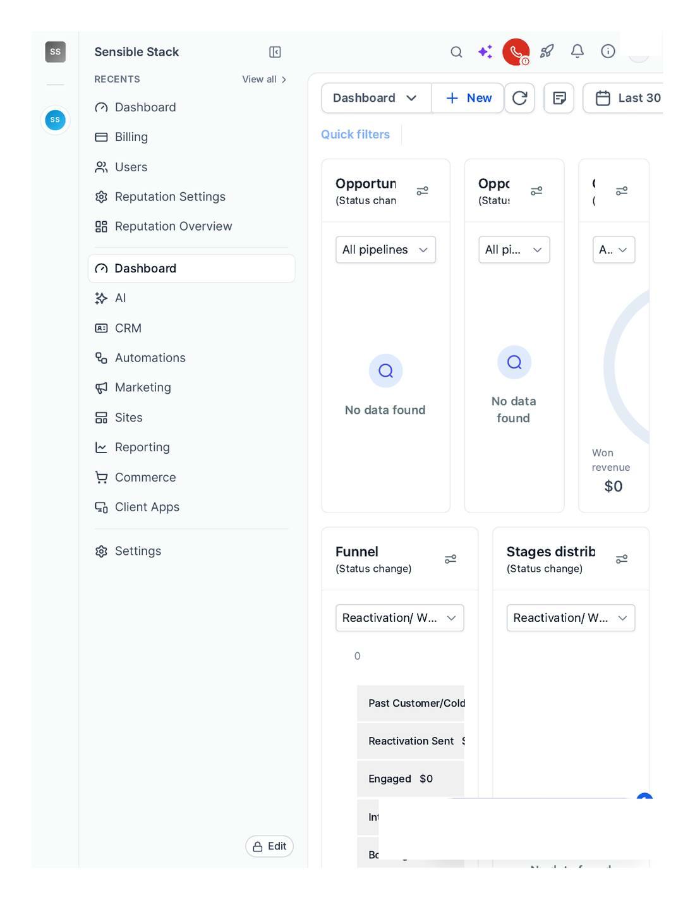
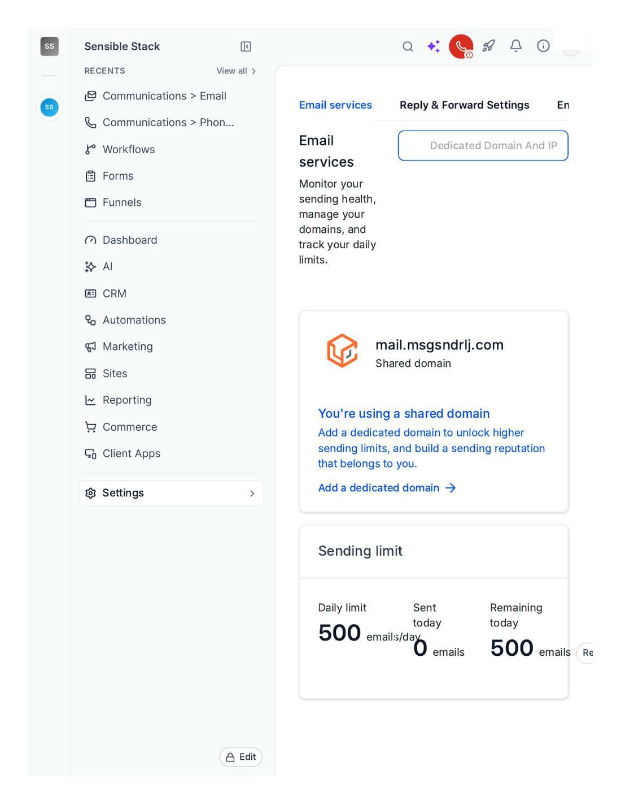
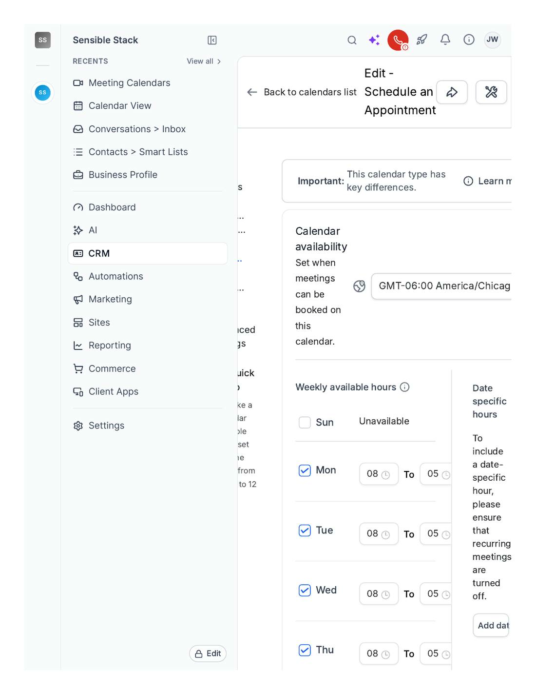
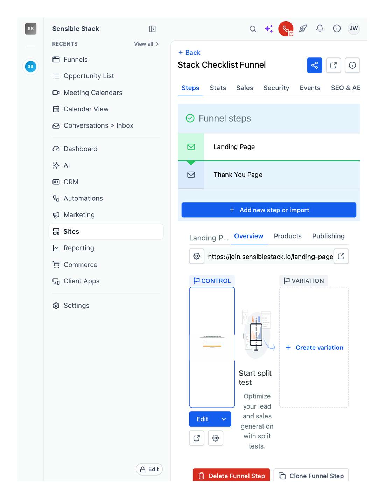
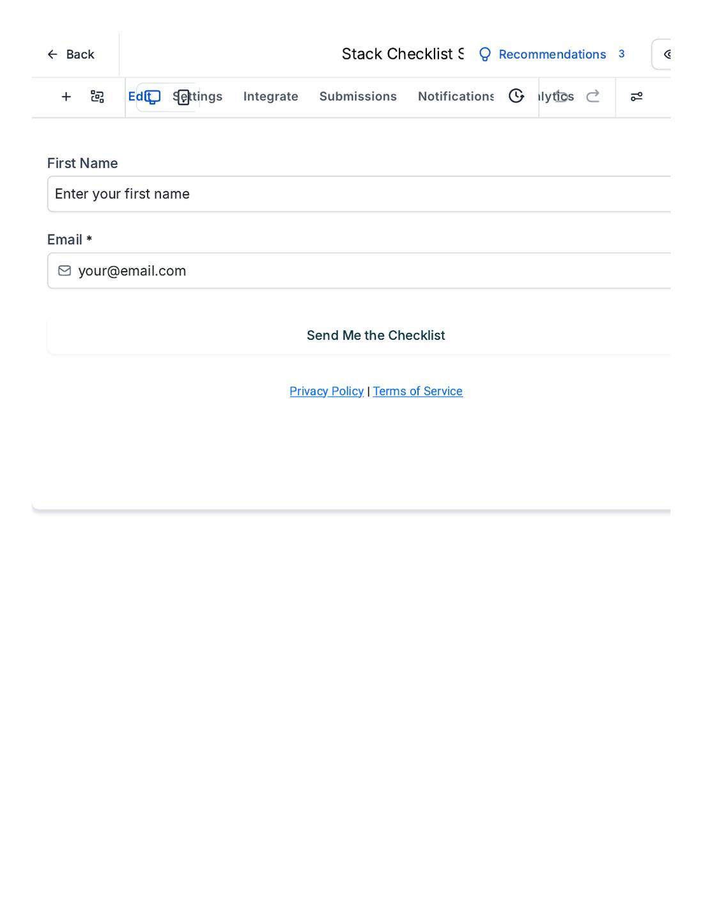
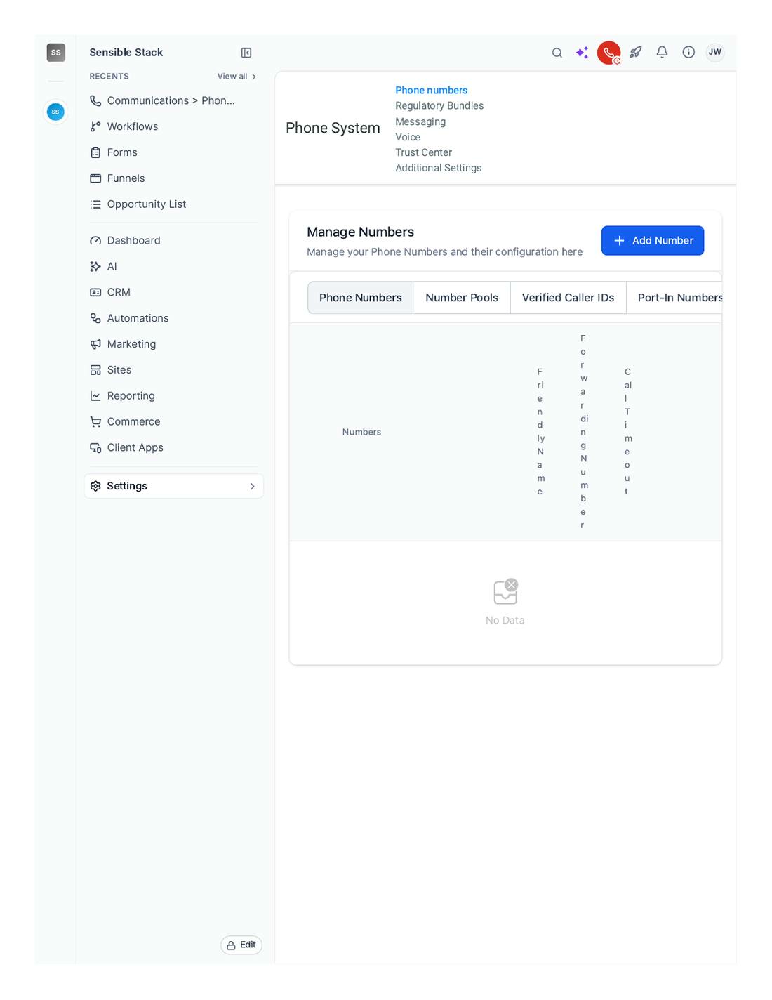
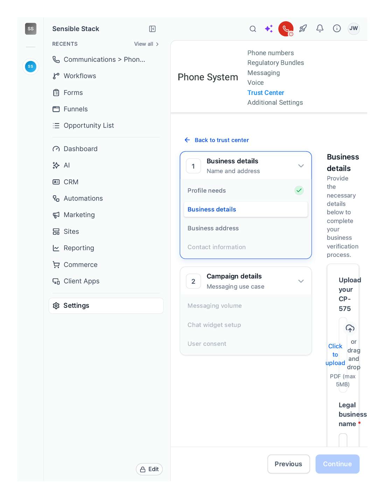
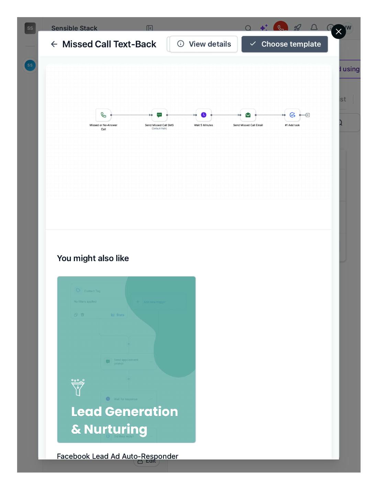

Last updated November 2026. Screenshots are from our own HighLevel account, November 2026.
Try it: Visit HighLevel (affiliate link: we may be paid if you sign up, at no extra cost to you).
Most HighLevel guides are written for agencies reselling it to clients. This one is not. It is the setup we ran on our own account as a single business: profile, email, calendar, one funnel, one workflow, a phone number, and the texting registration everyone trips over. In that order, with the friction left in.
Time and expectations. Steps 1 to 6 take an afternoon. Step 7, the phone and texting registration, runs on the carriers' clock, not yours: expect days, and do it early. Everything here was done on the $97 a month Starter plan during a trial, and the screenshots are the real screens, including the empty ones. Where our account has nothing set up yet, we say so, because that is what your account will look like too.
Your legal business name exactly as it appears on your tax documents, your business address and phone number, and your opening hours. If you intend to send text messages, and most businesses should, you will also need your EIN and the IRS confirmation letter for it, the CP-575, as a PDF. The texting registration in step 7 asks for both by name, and there is no way round it. If your EIN was issued in the last 15 days, the registration screen itself warns it may be rejected: carriers verify against records that take time to update, so a brand new EIN can mean a short wait before texting works.
Where: Settings, then Business Profile.
Fill in the friendly name, email, phone, website, address and timezone first, before you build anything. HighLevel pulls these details into your booking pages, emails and invoices, so a blank profile shows up later in odd places. Two gaps worth knowing from our own screen: the legal business name field sits separate from the friendly name, and it is the legal one the texting registration checks against your tax documents later. The currency picker and logo can wait; the legal name cannot.

While you are in Settings, look at the dashboard once with fresh eyes. A new account shows a getting started checklist and a set of empty counters. That is the honest starting point for every business on this platform, whatever the sales videos imply.

Where: Settings, then Communications, then Email.
Out of the box, your mail sends through HighLevel's shared sending domain, on a plan called LC-Email. It works immediately, which is what you want on day one, and it carries two limits worth knowing. The first is volume: 500 emails a day on the shared setup. The second is reputation: you share that domain's sending reputation with every other new account on it.
For a single business sending follow up and a newsletter, 500 a day is plenty to start. The upgrade is a dedicated domain, your own sending subdomain, which HighLevel offers in the same screen and which lifts the cap and gives you a reputation of your own. Our advice: start on the shared domain, add the dedicated domain in your first month, before your list grows into the ceiling rather than after a send bounces off it.

Where: Calendars, then the settings pencil on your calendar.
A new account comes with one calendar already made, a 30 minute appointment type. Rename it to something your customers understand, set your real availability (ours is set Monday to Friday, 8 to 5, weekends off), and then do the check almost everyone skips: read the booking link itself. Our calendar's link still contained a leftover template name from the starter content the account was created with. Yours may too. It is the link you will paste everywhere, so fix the name now, while nothing points at it yet.

The pipeline can wait. A new account's pipeline arrives with sensible stages (new lead, hot lead, booking, attended, sale, review) and zero entries. Use it as it comes for the first month. Renaming stages is procrastination dressed as setup.
Where: Sites, then Funnels, and Sites, then Forms.
Resist the template gallery. The first funnel a single business needs is the one that trades something useful for an email address. Ours is the checklist funnel this site runs on: a landing page with a headline, three lines of promise, and a form with two fields, first name and email, followed by a thank you page. Two steps, nothing else. The form matters more than the page: keep it to the fields you will actually use, because every extra field costs signups.


A new account also arrives with starter funnels and forms you did not make. Leave them alone until yours is live; deleting template clutter is a day two job, and doing it first is how an afternoon disappears.
Where: Automations, then Workflows.
A funnel without a workflow is a bucket with a hole in it. The workflow behind our checklist is the pattern to copy: when the form is submitted, tag the contact, send the first email immediately, wait two days, send the second, wait three more, send the third. Three emails, two waits, one tag. Every part of that recipe earns its place: the tag is what lets you find these people later, and the waits are what make it a sequence rather than a pileup in someone's inbox.

Build this before you build anything clever. Missed call texts and review requests, the next two steps, are variations on this same shape: a trigger, an action, a wait, a follow up.
Where: Settings, then Communications, then Phone System.
A new account has no phone number. Ours still does not, and this screen is what that looks like: an empty list. Buying the number itself is quick. What is not quick, and what catches nearly every new business out, is what comes after: in the US, business texting from a 10 digit number has to be registered under a system called A2P 10DLC, and carriers block unregistered texts. If your follow up texts silently fail in your first week, this registration is the reason nine times out of ten.

Where: the same screen, then the Trust Center tab, then Start Registration on the A2P Messaging card.
The registration is in two parts. Business details first: it asks you to upload your CP-575 letter, give your legal business name exactly as it appears on your tax documents, and enter your EIN, with the on screen warning that EINs issued in the last 15 days may be rejected. Campaign details second: what the messages are for, how many you expect to send, and how customers consented. You cannot even view the second part until the first is complete, and, worth knowing before you budget for it, no fee and no approval time is shown anywhere before that point. The honest way to plan: have the EIN and the letter ready before you start, expect the approval to take days rather than minutes, and use email for follow up in the meantime, exactly as step 5's workflow already does.

Where: Automations, then Workflows, then Create workflow, then Select from Template, and search "Missed Call".
Do not build this one from scratch. HighLevel's template library carries a missed call text back recipe that thousands of accounts already run: a missed or unanswered call triggers an SMS, a five minute wait, then a follow up email, then a task so a human sees it too. Your work is the setup the template itself lists: a phone number connected (step 6, which is why this comes after it), your real booking link swapped in for the placeholder, and your business hours corrected in the email text.

The reason this step pays: most callers who reach voicemail never leave a message. An automatic text inside a minute is the difference between a lost job and a booked one, and it is the single automation a trades or services business should switch on first.
Where: Marketing, then Reputation.
The reputation section opens with a six step getting started list of its own: connect your Google Business Profile, set up a review link, configure review responses, create a widget, send your first request, connect more platforms. Work it in that order once real jobs are flowing. Two honest notes from our account: review requests by text depend on step 6 being finished, and the automated review responses should stay supervised until you have read a few yourself. Reviews compound quietly; a month in is not too late, and asking before you have done the work is too early.
| Item | Monthly billing | Annual billing |
|---|---|---|
| HighLevel Starter | $97 a month, $1,164 over a year | $970 for the year (ten months' price) |
| Email, SMS and AI usage | Charged on top, by use, through the built in wallet. A single business doing follow up spends small amounts here; a heavy texter should model it before scaling. | |
| Phone number and A2P registration | A number is required before calls, texts or review requests work. Registration fees are not displayed until you are inside the registration with your business details entered, so treat any exact figure quoted elsewhere as unverified. | |
The trial is 14 days and takes a card, and it bills automatically at the end unless you cancel. Decide by day 13, not day 14. How HighLevel stacks up against the other all in ones is on our HighLevel comparison hub.
Three things will annoy you, in the order you will meet them. The account arrives full of starter content you did not make, including names baked into links you have to check by hand. Texting, the feature most businesses buy it for, is gated behind a registration that needs tax documents and runs on carrier timescales. And the interface rewards an afternoon of setup before anything works at all: this is a platform you configure, not an app you open. None of those stopped it being the right tool for our funnel, and the setup above is the shortest honest path through them we found.
Try it: Visit HighLevel (affiliate link: we may earn a commission).
Some links on this site are affiliate links and earn us a commission, at no extra cost to you. Some of our strongest recommendations earn us nothing. We label the difference openly. See our affiliate disclosure.